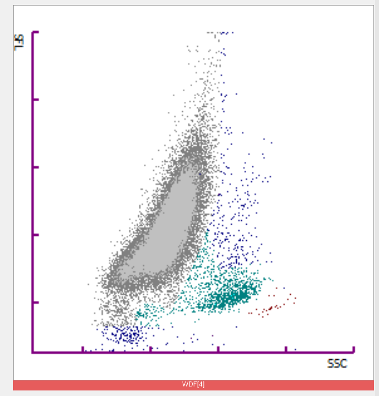
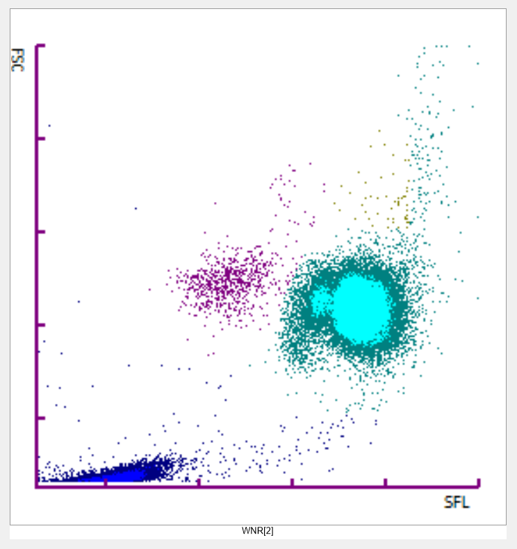

Morphology Case Library
Case Study: 25Q10112315
Case Information
Patient: 78-year-old female.
Clinical Details: Tired all the time.
Initial Full Blood Count
| WBC | 57.95 x10⁹/L |
| RBC | 2.46 x10¹²/L |
| HGB | 75 g/L |
| HCT | 0.231 L/L |
| MCV | 93.9 fL |
| MCH | 30.5 pg |
| MCHC | 325 g/L |
| PLT | 73 x10⁹/L |
| RDW-CV | 19.9 % |
| NRBC | 0.85 x10⁹/L |
Automated Differential failed as analyser unable to differentiate cells.
Manual Differential (Post-Morphology)
| Neutrophils | 3.51% |
| Lymphocytes | 9.65% |
| Monocytes | 0.88% |
| Eosinophils | 0.00% |
| Basophils | 0.00% |
| Blasts | 85.96% |
Sysmex Scatterplot Analysis
WDF (White Cell Differential) Scatterplot: This plot is overwhelmed by a massive, undifferentiated, grey-coloured population in the left half. This is the normal areas for lymphocytes and monocytes.
WNR (White Cell Nucleated Red Cell) Scatterplot: This plot clearly shows two distinct populations. The dominant cluster is on the left, confirming the vast majority of nucleated cells are leucocytes. A smaller but significant secondary cluster is visible in the NRBC area on the right, confirming the numerical NRBC count of 0.85 x10⁹/L.

WPC (White Precursor Cell) Scatterplot: This specialised plot gives a very clear and alarming signal. The events are almost exclusively located in a tight cluster in the upper 'blast' region. This provides a high-confidence flag that the sample contains a large, homogenous population of pathological precursor cells, strongly supporting a diagnosis of acute leukaemia.
.PNG)
WPC (SSC-FSC) Scatterplot: This plot shows the blast population has low internal complexity (low SSC), typical for agranular blasts, and a relatively uniform size (tight FSC distribution). This homogeneity is another feature often seen in acute leukaemia where a single malignant clone has proliferated.
Blood Film Examination
Red Cell Picture

White Cell Gallery
Click a thumbnail to view the full-size image.
Morphology Checklist
Select up to five key morphological features you have identified.
Analysis & Peer Consensus
Your Selected Features:
Expert Commentary
Top Features
| Feature |
|---|